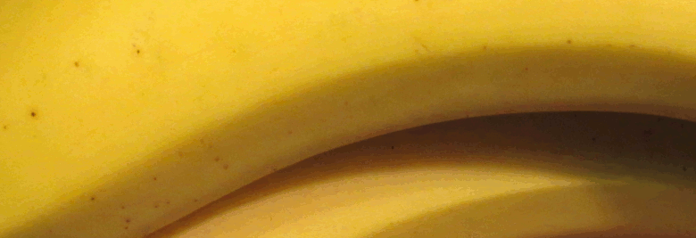

Candida
Many patients are familiar with Candida Albicans, the cause of oral and vaginal thrush. Candida can be much more serious however, making a toxin called acetaldehyde to thwart the immune system as it invades the body. This is the same chemical that forms in the body when alcohol breaks down - many patients who cannot tolerate alcohol have a heavy overgrowth of Candida.
The widespread heavy metal mercury seems to promote the growth of this yeast and Candida sufferers should perhaps avoid farmed and predatory fish, as well as foods often fertilised with fish products such as cashews, citrus fruit and tomatoes. The amount of mercury in the ocean has risen by 75 percent in the past 20 years and may be wise for some folks to avoid fish and fish products generally.
How do we go about reducing our exposure to toxic moulds and also reducing the amount in our bodies? A lot of the food that we buy is potentially mouldy and it is often food sold to us as the healthy option.